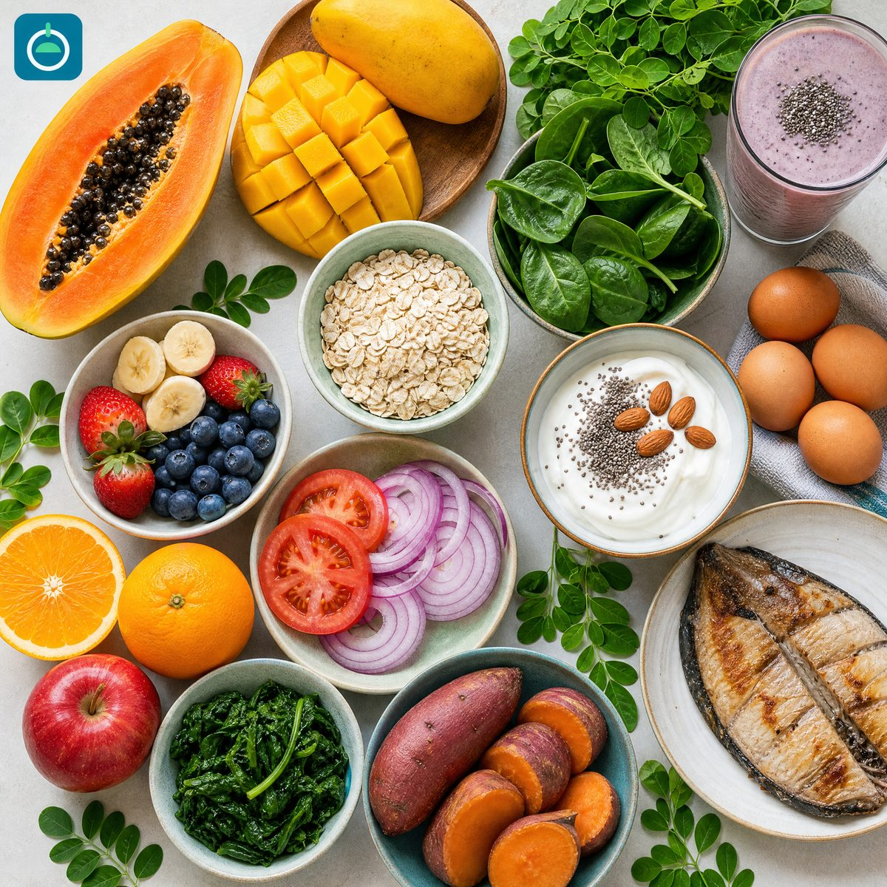

Two weeks of meals, decided in ten minutes.
Stop wondering what's for dinner at 7pm. Pick a dish for every slot across fourteen days, tick them off as you eat, and keep the whole plan on your phone or the fridge door. Low-carb, high-protein, and built around everyday food — whether you cook it, buy it, or order it.
- No account, no email
- Works offline
- Prints to PDF

Three steps, then you're done thinking about it
The plan is already filled in when you open it. Change what you don't like, keep what you do.
Open it
Fourteen days appear, every slot pre-filled with a suggested dish. No blank page, no setup, no account to create.
Swap what you want
Every meal is a dropdown. Don't fancy Tuesday's fish? Pick something else. Want adobo three times this week? Nobody's stopping you.
Eat and tick off
Check meals off as you go, however the food got to the table. The day lights up when it's done, and a counter tracks all 42 main meals across the fortnight.
What you get
Everything is in one page that loads instantly and keeps working when the signal drops.
Fourteen days, four slots
Breakfast, lunch, dinner, and an optional snack for every single day — with a suggested plan already chosen for you.
Add your own dishes
Found something you love? Type it in and it becomes a choice on every day of the plan, right alongside the built-in options.
Print it or save a PDF
One button turns the whole fortnight into a clean two-column printout for the fridge door, reference sections and all.
A shopping list that matches
Protein, vegetables, fruit, and pantry staples for the week, sized for the plan — so one trip covers it, if you're the one shopping.
The rules, in plain language
Why carbs sit at breakfast, what fruit fits, how to order when you're eating out, and what to do about beer.
Made for your phone
Big tap targets and one clean column on a small screen — for the kitchen, the market, or the queue at a food stall.
The numbers behind the plan
Roughly 2,000–2,200 kcal a day with protein at every meal. Carbohydrate sits at breakfast so lunch and dinner stay light — no rice at those meals, just cauliflower rice, extra vegetables, or a bigger portion of protein.
Eating well shouldn't depend on whether you cook
Your health doesn't wait for a free evening. Whether you cook every meal, pick something up on the way home, or eat what's already on the table, the planner makes one decision for you — so the better choice is the easy one, on the days you have energy and the days you don't. Take the portions your own appetite needs.
If you cook most of your meals
- Decide once a fortnight instead of every evening
- Cook in bulk on the weekend and eat well all week
- One shopping list covers the whole week
- Everyone at home can see what's for dinner without asking
If you buy, order, or eat out
- Walk in already knowing what to order — grilled over fried, no rice
- Every dish is plain enough to ask for at a carinderia or restaurant
- Add the meals you actually buy so the plan matches your week
- Same tick-off and PDF, whoever did the cooking
Ready to stop deciding at 7pm?
Open the planner, keep the suggested picks or change them all, and print the fortnight before you next shop. It's free, and there's nothing to sign up for.
Try it for freeOpens straight into the planner — no account, no email, no payment.